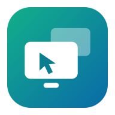

#
Adresle bağlanın
Her bilgisayarın kalıcı 9 haneli bir adresi var. Adresi yazmanız yeterli.

FarDeskWindows ve Mac için uzak masaüstü
Adresi yazın, karşı taraf onaylasın, ekranı görün ve kontrol edin. Sohbet, sesli görüşme ve dosya aktarımı da bağlantının içinde.
Her bilgisayarın kalıcı 9 haneli bir adresi var. Adresi yazmanız yeterli.
Karşı taraf kabul etmeden hiçbir şey görülmez. İstek ekranın ortasında açılır.
Kendi bilgisayarınıza, başında kimse olmadan parolanızla bağlanın.
Bağlantı sırasında mesajlaşın, ekran görüntüsü yapıştırın, sesli konuşun.
Dosyaları sürükleyip bırakın; iki yönde, 4 GB’a kadar.
Birkaç bilgisayarı sekmelerde açın, onaylı geçişle aralarında dolaşın.
Karşı bilgisayarın ikinci, üçüncü ekranına tek tıkla geçin.
Yeni sürüm çıktığında program haber verir; Windows’ta kendini günceller.
Sürüm bilgisi alınıyor…
Windows 10 ve 11 · 64 bit
M1, M2, M3, M4 ve sonrası
2020 öncesi Mac’ler
Mac’inizin işlemcisini öğrenmek için: sol üstteki Apple menüsü → Bu Mac Hakkında → “Çip” satırı Apple yazıyorsa Apple işlemci, “İşlemci” satırı Intel yazıyorsa Intel.
FarDesk-…-win-x64.exe şeklindedir..dmg dosyasını açın ve FarDesk simgesini Applications klasörüne sürükleyin.xattr -dr com.apple.quarantine /Applications/FarDesk.app